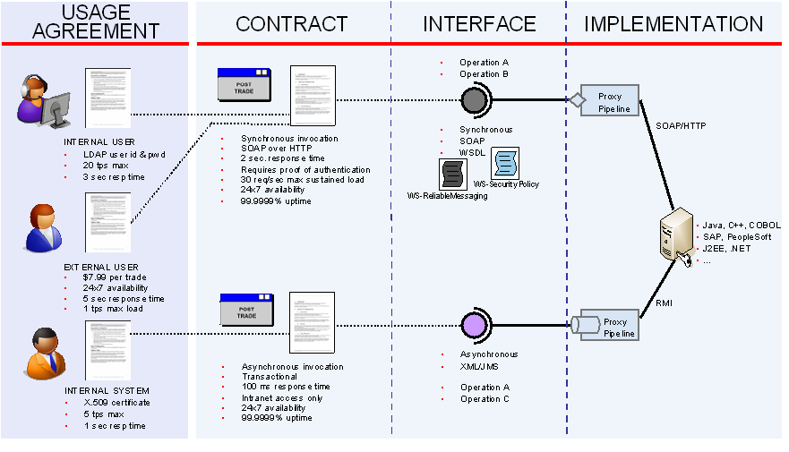
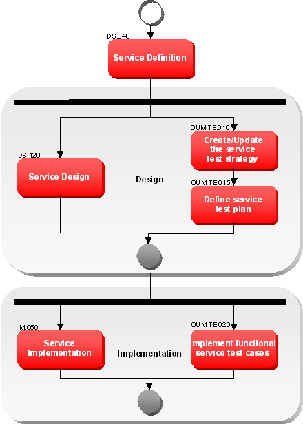
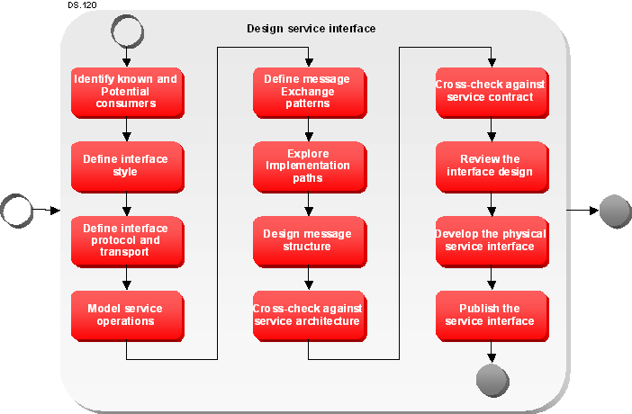
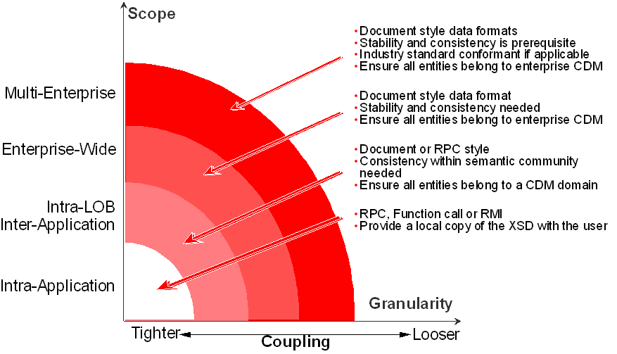
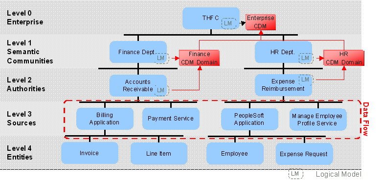
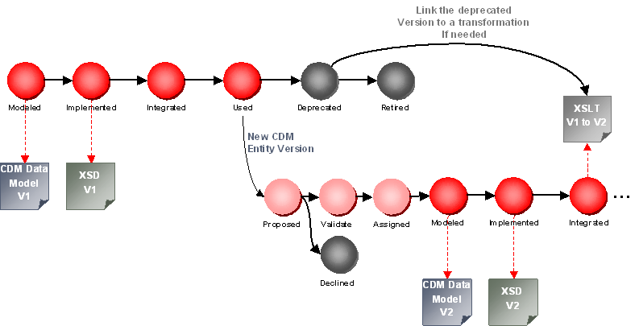

OUM |
Technique Overview |
||
Method Navigation |
Current Page Navigation |
||
|
|
||||||||
The purpose of this technique is to provide guidance on best practices for service design.
Service Design, in addition to other types of design activities, is responsible for crafting the interface for a service. Although this sounds like a relatively straight forward task, one goal of service design is to come up with an interface that will maximize reuse while conforming to the demands of the service contract. The service interface must be designed with the consumer’s needs in mind, but also with an eye towards the non-functional and service enablement requirements dictated through the service’s contract. Therefore, service design may include a series of trade-offs where a balanced interface between consumer and contract are sought after.
This technique mainly focuses on designing the service interface. The overall design of a service depends mainly on the reference architecture and the detailed design considerations on the different service types, i.e., layers in the service architecture.
The service interface design begins with the service contract that is defined through service definition. The service contract provides most of the information necessary to develop an interface that is geared towards fulfilling the contract. The second influencing factor for service interface design is the consumer. Analysis with respect to how consumers (and potential consumers) will utilize the service must also be considered in order to achieve a balance between maximizing service reusability and convenience for the consumers, but also an interface that meets the demands of the contract.

Once service design completes for a service, a few things can commence. The first is that the test cases can be created against the service interface. This allows the test case development to commence in parallel with the service implementation. Also, projects that are depending on the usage of the service can now incorporate the interface into the delivery efforts allowing development efforts requiring the service to proceed. Delivery teams may develop stub implementations for the interface that return crafted results for unit testing purposes.

There is a common misconception that the service interface consists entirely of the physical artifacts which are deployed to physical systems and exposed through service infrastructure. This is partly true, in that the end result of service design produces the physical service interface, but how did the physical interface come to be? What decisions, considerations and trade-offs were made? What part of the contract is fulfilled by what portion of the interface? The answers to all of these questions (and more) must be documented as part of the service interface design.
The interface design shares equal importance with the physical interface and it basically shows the work involved by going through the service design task. The interface will be described in a separate asset in the enterprise repository. Refer to the IT Asset Management technique for a suggested format on documenting the interface design. The service design does not need to be a large document, but it does need to articulate the reasoning behind crafting the interface in the manner that it has been crafted. This information becomes especially useful if revisions to the service are later requested.
Another important point to note is that the service interface is not completely resistant to change (without versioning) until the service has completed implementation (and testing). It is quite often impossible to completely define a service interface until all of the implementation details have been worked out (the same is potentially true for the contract also). Therefore, the interface (and possibly contract) may go through a number of iterations as the delivery effort moves forward. Typically these changes are minor and have little impact on dependant applications and test case development. The balance though, is to not get bogged down in design, and simply understand and plan for changes required as the implementation is flushed out.
The service interface is not just a set of operations exposed through a standard protocol and transport. It represents a technical glimpse into how the service contract will be realized within the SOA. There are a number of influencing factors that affect the service design task and the overall crafting of the service interface. Influencing factors that affect service design include:
Each of these influencing factors is covered in more detail later on in this overview.
The Service Interface represents the face of the service. It is the side that all consumers see and interact with. It also provides some of the means for which the contract of a service is fulfilled and plays a role across all functional and several non-functional requirements. The interface must be designed to fulfill the functional aspects of the service contract, but should also be designed to enable the non-functional requirements, as well as maximize its potential for reuse.
The service interface is not necessarily a web service. Web services are a common approach, and do provide a standards based interface, however there are alternatives. The key requirements of an interface that needs to be considered during service design are as follows:
Published Service Interface
No. |
Step | Component | Component Description |
|---|---|---|---|
1 |
Identify known and potential consumers. | ||
2 |
Define the Interface Style. | Interface Style | |
3 |
Define Interface Protocol and Transport. | Interface Protocol and Transport | |
4 |
Model service operations. | ||
5 |
Define Message Exchange Patterns. | Message Exchange Patterns | |
6 |
Explore Implementation Paths. | Implementation Paths | |
7 |
Define Message Structure. | Message Structure | |
8 |
Cross check against the Service Architecture. | ||
9 |
Cross check against the Service Contract. | ||
10 |
Review the Interface Design with SOA Leadership | ||
11 |
Develop the Physical Service Interface. | Physical Service Interface | |
12 |
Publish the Service Interface. | Physical Service Interface |
Service design begins with the service contract, and proceeds with the consumer and reuse in mind. When completed, the service design and interface represent the outputs from the service design task.
Service design differs significantly from traditional application design, as the focus is not on how the service will be constructed, but rather, how the consumers will access and interact with the service. The implementation behind a service may change several times without impacting the service design, which is highly unlikely in the case of an application. When a service design is changed however, the impacts are typically significantly larger than in the application case.
Further, one must consider how certain functional and non-functional requirements will be met. For example, a service might rely on a service bus to enforce security, etc. while another does not. There must be some way to capture this dependency as it has an effect on how a service needs to be offered. If a service bus is required, what needs to be said about the interface between the service bus and the implementation?
The reasons for performing design, whether it is for a service or an application, are the same. Design represents a discipline within a larger process that is utilized to ensure both quality, and efficiency. Design also provides the technical reasoning behind the resulting interface, which provides a valuable tool when changes are required to be made to the interface. Interface design is of particular importance to an SOA, and one of the driving goals behind service design is to ensure that the interface created helps enable the SOA, rather than simply satisfy the needs of the known consumers. Quite often the success of any product is determined by its interface. SOA is no different.
Service interfaces should not be designed for a specific consumer. The interface resulting from service design needs to be clear, concise and consistent. In order to be consistent, enterprise standards need to exist to ensure consistency. These standards should be defined in the SOA Reference Architecture. The crafting of service interfaces must be considered on the same level as crafting infrastructure interfaces, rather than simply creating a programmatic interface. It is quite possible that several of the services designed in an SOA will provide an infrastructure-like role (e.g. most utility services are used to fill infrastructure gaps).
The steps for performing service design are as follows:

The steps initially focuses on looking at the service interface from all influencing angles and making any considerations necessary to meet the demands of the contract, SOA Service Architecture, consumers and potential consumers. The analysis is documented as part of the service design and cross-checked with the service contract and reviewed with the SOA Leadership team. Once complete, the physical service interface artifacts are developed and the interface is published for use.
The first step of service design is to identify the set of consumers and potential consumers that will make use of the service. Do not spend a great deal of time speculating on potential consumers, and limit your time to realistic scenarios. For each identified consumer describe the expected way the consumer will interact with the service, as well as the scope of the consumer.
Note: An interface should conform to the broadest scope reasonably imaginable to enable it to be promoted without a re-write.
After the set of consumers have been identified, determine the interface style (or feel) that is most appropriate to service these consumers. Base the decision not only on consumer needs, but also on contract characteristics such as scope, category, and QoS demands. Interface style tends to have the largest impact on performance based QoS factors.
Determine the best protocol and transport that will be used to express the interface. The basis for this decision typically comes from examining the scope, QoS, and Service Enablement aspects of the service contract.
Design the set of operations (or functions) that will be exposed directly through the interface. In a document styled interface fewer operations of courser grained function are prevalent, versus a function styled interface where more operations of finer grain are prevalent. For each operation provide the following:
Define the message exchange patterns that consumers will be utilizing to interact with the service. Typically, only a single pattern is applicable to a service interface.
Take a little time here to examine how the interface will be implemented. There will be a chance to iterate and refine the service interface while implementation is ongoing, however, it makes things move a little smoother if some of the implementation details are flushed out at this point and reflected in the interface when appropriate. In particular it is vital at this point that a check is made to understand if this will be a unique implementation or if another service “implements” the same service candidate. If the interface is not unique for the service candidate, then check if the interfaces can share the same implementation, maximizing reuse.
The message structure is typically shaped by the interface style selected previously. The message structure defines the data formats for input and output for the service. As with the other aspects of the service interface, the message structure should be designed in a way that will facilitate ease of use as well as fulfill the requirements of the contract.
Example: A document style interface has been selected for an enterprise class data service. Through this service the consumers receive the complete data entity as a single document. When changes are made to the entity, the entire document is sent back through the service in order to have the data updated in the persistent storage systems. Since the data entity may consist of a significant amount of data, the document has been broken down into manageable smaller pieces containing data that is typically updated together. The document is also modeled to allow a partial document to be created. This allows the consumer to strip out the portions of the document that will not be updated and send that back through the update operation. This allows not only less data to be sent over the network, but also limits that amount of work that needs to be completed through the service implementation required to update the data as unchanged data is not examined.
One of the guiding principals that influences the entire set of service-related tasks is the Service Architecture. This component provides architecturally significant guidance with respect to all services within the SOA, as well as specific guidance around services within a specific scope or category. Refer to the Service Architecture technique for more information.
There are several topics covered within the Service Architecture that more than likely will affect Service Design. The services versioning strategy is a good example. It is quite common for various versioning strategies to expose some of the information passed (e.g., consumer ID, service version, etc) as part of the interface. Other areas of the Service Architecture that may influence the service interface include: Compensating Transaction support; Service Invocation Strategy; and Service Security Strategy. Examine the interface for the service and ensure that it conforms to the appropriate guidelines identified within the Service Architecture.
Check the enterprise repository for any architectural policies that apply for the service and impact the interface design. Depending on the scope of the service, there may be policies on the compliance of the message structure to any canonical data model or special security considerations.
Now that the first pass at the service design has been completed, it is a good practice to review the interface against the service contract to ensure that it will be able to meet the demands stated in the contract.
Once the service interface has been designed and cross-checked against the contract it is ready to be reviewed for quality assurance. Typically, this is done by an enterprise architect or an architect of another team reviewing all the design decisions. To review the interface design, examine the service interface to ensure contract conformance, as well as conformance to any policies assigned in the enterprise repository. Any deviations from the SOA Service Architecture guidelines or policies need to be justified and approved by the SOA leadership team.
The physical service interface artifacts can now be developed. In the case of web services this typically consists of the WSDL and relevant XML Schemas. Consider creating a WSDL to document the service interface for any kind of interface style. This ensures that message structures and operations are documented in a standard way allowing for tools being used to generate test stubs or mock objects.
The physical interface and its design can now be published to the enterprise service repository. The interface is now available to project delivery teams and test teams.
The scope for which the service will reside in the SOA plays a key role in choosing the style of interface that will be developed for the service. Consider the illustration below:

Scope plays a major role in determining the interface style and data formats that will be crafted into the service interface. As scope increases, so typically, does the number of potential consumers. Larger scoped services can typically benefit from a document styled interface as these interfaces tend to cut down on the number of requests required to the service by a single consumer. The trade-off here, or course, is that more data is transported between the service and the consumer. Document style interfaces also provide a lot of flexibility through service infrastructure that supports content based routing, as well as data transformations and aggregations.
The requirements regarding stability of the interface design rise with the scope of the service. Therefore, the selection of the data entities and style used in the message design will be impacted by the scope as well. Read more about the usage of the Canonical Data Model (CDM) later in this technique overview.
XML has become a common data interchange mechanism used within SOAs. With this in mind, XML quite often represents the data model with respect to the SOA, and is therefore a critical component. The definition of data structures and interfaces in XML should not be taken lightly and an overall strategy for incorporating and dealing with XML within the enterprise is definitely necessary. Any changes required to XML data structures can have a massive impact on highly reused components of an SOA. Therefore, the XML must be designed to accommodate change while minimizing the impact on consumers that do not need to be aware of the change. One of the benefits of SOA is to increase an enterprise’s IT and Business agility. If you design rigid interface however, this purpose is defeated.
Similar to services themselves, a proper versioning strategy should also be incorporated within data structure design. This will allow documents of various versions to be routed to the correct service provider through service infrastructure. Also, the incorporation of optional fields within XML allows for additions to document structures without requiring consuming applications to change.
Every time an XML document is modeled you need to take the following factors into account:
These factors do not only affect the way XML represents data, but also any supplementary technologies (such as parsers) will behave when working with the XML data. Below is a flavor of some of the things that you may not have considered which are determined through XML design:
The following are best practices that you should consider when designing XML data structures.
In order to maximize Extensibility and Reusability within XML design consider the following:
If a document is designed correctly, it can be trimmed to meet a specific consumers needs. This technique, basically has a consumer (or event service infrastructure) trimming off the portions of an XML document that is not needed. This can be done in a consumer-specific proxy service using a translation (XSLT), or if optional elements are present, by removing them. This ensures that the consumer only has to deal with the information which it is interested in, as well as prevents overhead if the data is sent on after the consumer has completed work on it. This technique also allows the service provider to produce the full document making it as highly reusable as possible.
Depending on the service bus tool, consumer-specific proxies can be configured in the service bus hiding the more complex and generic interface of the service provider. In this scenario, the interface of the service provider is the private interface only available at the service bus layer. However, the service bus can provide a set of public interfaces to the different consumers allowing for consumer-optimized interfaces.
The names you give the various elements types and attributes within your XML schema have an effect on performance, since large names increase the documents size and processing overhead. Small names on the other hand, may be difficult to understand. Try to create a balance between legibility and performance, but most of all, be consistent. If documents are going to be more internal facing or finer grained, then it is safe to use more cryptic naming for the sake of performance. Courser grained documents for higher-level eyes may want to be leaned towards the legibility side. This represents a good balance, since typically there are more calls and performance requirements on the lower level, finer grained services, than those that sit higher up in the architecture.
One good practice that could be incorporated into the schemas of documents that use a cryptic naming convention is to incorporate a Legend element. This is an optional element that would never be passed with the actual data, but provides a description for each name for the purpose of the one reading the schema.
Another practice is to utilize the parent element as part of the naming convention. For instance consider the case of a Customer record with the order history attached. Instead of using something like OrderItemID, and OrderItemDescription, etc, define an element called OrderItem, and have ID, and Description attributes of OrderItem. This is a very basic example, but it is effective in getting the point across.
Yet another alternative, is to use a compression API when transmitting your document, this will not save on processing impacts (parsing, etc), but will save on transmission bandwidth. Just make sure that the overhead of compressing and decompressing of the document does not add more overhead than saved by transmitting the complete document over the network.
Note: For move extensive information on XML design with respect to SOA, you should check out Thomas Erl’s “Service-Oriented Architecture: A Field Guide to Integrating XML and Web Services”.
A Canonical Message Model (CMM) applies a Canonical Data Model (CDM) to message formats by constructing message structures, elements and attributes using canonical data.
A Canonical Data Model (CDM) defines a common data format to simplify communication. If systems use individual data formats, a CDM can be used as a translation intermediary. Over time, new services and systems should adopt the CDM as their natural language to apply a common data taxonomy across the enterprise. A CDM can be managed with the Enterprise Domain Model.

When following the approach of ownership for enterprise data modeling (refer to the Enterprise Domain Model - Data Ownership Approach technique), each semantic community may create their own logical data model and based on that model can manage its own CDM domain. Common entities used across the communities should be moved to an enterprise CDM. Use the data flow to ensure the needed attributes for communication across communities are included in enterprise CDM. Try to keep it small and simple.
All data entities that are part of one of the CDMs should be managed in the enterprise repository. Refer to the IT Asset Management technique for a suggested meta model for data entities. Depending on the classification against the enterprise data model, the entity becomes a member of the corresponding CDM.
A Canonical Message Model (CMM) implements a CDM based on XML providing schema designs (XSD) for all entities assigned to a CDM. These implementations of a data entity can be used for message structure definition in the service interfaces (WSDL). After having identified the data entities needed in the interface of a service check the enterprise repository top down for entity assets available as part of one of the CDM domains. Start with the enterprise CDM and then follow top down the data decomposition path of the enterprise data model. If an entity asset already exists reuse the entity by using the linked XSD file without change. You can add additional attributes needed by creating your own entity using the CDM entity as one attribute. Create a relationship between the interface asset and the entity asset to document usage of the entity as part of the interface.
A CMM can help to standardize interfaces within the same CDM domain and therefore will ease service reuse. For integration with consumers of other communities standard transformations (XSLT) can be used on infrastructure level, e.g., the service bus, to automatically translate between CDM domains.
The reuse of data entities across interfaces will imply special considerations on version management:
To allow evolution of CMM ensure all interfaces always use the latest possible version of an entity. New interface will always need to use the latest version available. Try to provide XSLT transformations between versions to document a migration path to integrate consumers and services linked to different versions of the CDM. Depending on the service bus the XSLT can be used to automate consumer migration.

Ensure that the style and conventions used to design the entities are common across the enterprise. Specifically avoid the use of version numbers in the formats to allow for mixed communication with different versions. Ensure that the entities are defined generic allowing for enhancements. The usage of typecodes can help on this. But ensure that a common approach on typecode definitions is used. Select either an attribute or an element to document the typecode.
In order to avoid high integration costs for service reuse, trust in the stability of the interface and the reliability of data provided by the services is key. Use governance policies to ensure common usage of CMM and manage evolution centrally in accordance with any data standards of the different CDM domains. Reduce CDM to the minimum needed ensuring relevance of information with minimal amount of data.
Try to avoid transformations where possible. Therefore ensure changes to CMM will not impact interface design by using optional as much as possible. But encourage the use of transformations to ease reuse cross various semantic domains.
In the different industries there may be industry accepted reference data models available. Standard committees like eTOM and Acord try to define generic CDMs to be used across the industry. Oracle provides a cross industry reference data model as part of AIA. Often these standards become importance for B2B communication in that industry sector. Therefore adoption of an industry reference data model should be applied on enterprise level. Typically these standards provide XSD schema files already to be used in service interfaces.
For an organization to adopt an industry reference data model, the data requirements of the organization will need to be checked against the CDM. Often only parts of the industry CDM are applicable and then the CDM should be trimmed to use only the relevant parts. Identify the missed business domains and check for other already available enhancement options. Some of these industry data models are enhanced by special interest groups.
Industry standard data models apply to the process models defined as part of that standard. If the whole model including the processes should be applied to the organization, the interfaces used for communication will already comply with the CDM. But often the processes need to be changed or enhanced or only the data model shall be applied. This may result in different data requirements. In that case consider enhancing the industry CDM by CDM domains applying the needed changes. This will ensure that the industry model is kept unchanged at enterprise level, making it easier to synchronize the model with new versions of the industry standard. In addition this will ensure services with multi-enterprise scope stay compliant with the industry standard. On the other side you can enhance, change or transform entities depending on integration issues with any existing application or special data considerations.
There are no templates available to assist with this technique.
This technique is recommended for use in the following OUM tasks:
| Task | Usage |
|---|---|
| Use this technique to identify details of the customer's service development process as related to SOA Services. | |
| Use this technique to assist in understanding Detail Services design. |
Use the following criteria to check the quality of this technique:

Copyright © 2006, 2016, Oracle and/or its affiliates. All rights reserved.